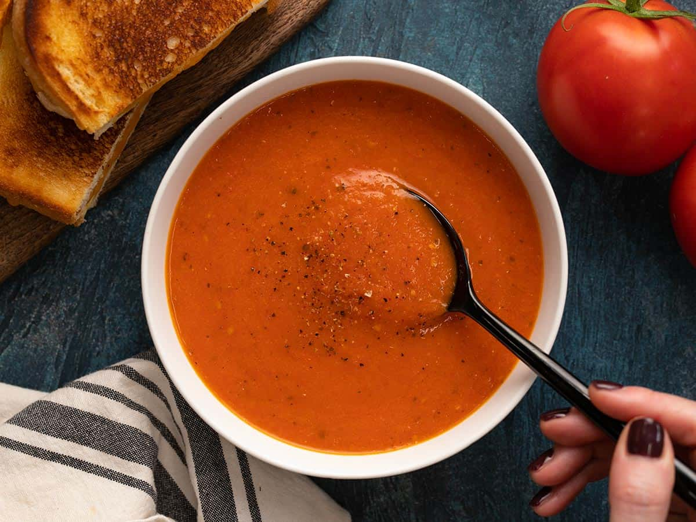

tomato-soup recipe

Ingredients
- 2 tbsp olive oil (or butter)
- 1 medium onion, finely chopped
- 3 cloves garlic, minced
- 1 bsp tomato paste
- 6 large tomatoes, chopped
- 2 cups vegetable broth
- 1 tsp sugar
- 1/2 cup heavy cream
- salt and pepper, to taste
Instructions
- Saute the aromatics
- Heat olive oil (or butter) in a large pot over medium heat.
- Add the chopped onion and cook until softened, about 5 minutes.
- Stir in the minced garlic and tomato paste, cooking for 1-2 minutes until fragrant.
- Cook the tomatoes
- Add the chopped fresh tomatoes (or canned tomatoes) to the pot.
- Pour in the vegetable broth and stir well. Add the sugar, basil, oregano, and a pinch of salt and pepper.
- Simmer
- Bring the mixture to a boil, then reduce the heat to low.
- Simmer uncovered for 20-25 minutes, stirring occasionally, until the tomatoes are soft and the flavors are well blended.
- Blend the soup
- Use an immersion blender to puree the soup until smooth.
- Add the cream
- Stir in the heavy cream and adjust the seasoning with more salt and pepper as needed. Let it warm through for 2-3 minutes, but avoid boiling.
- Serve and Garnish
- Ladle the soup into bowls and garnish with fresh basil, croutons, or a drizzle of olive oil or cream.